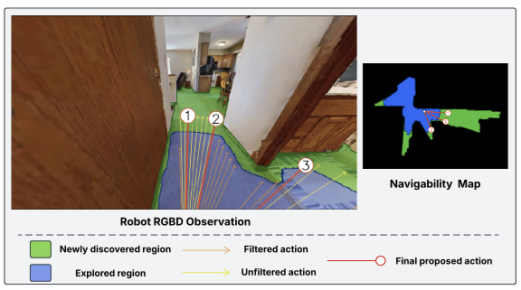
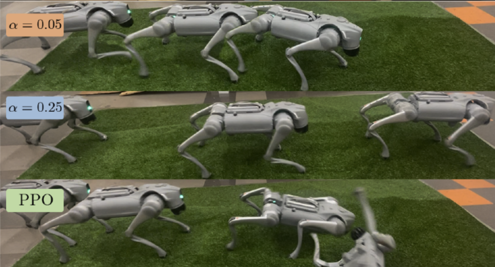
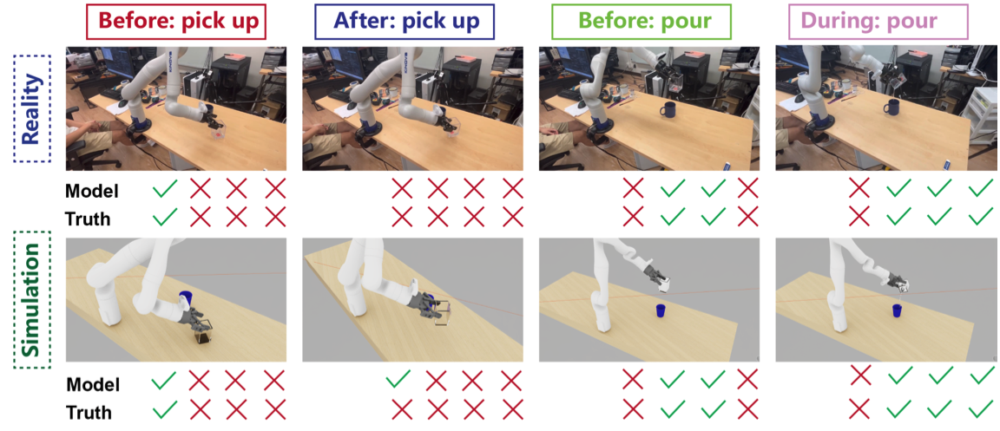

I am a Computer Science PhD student at Johns Hopkins
University, advised by Haimin Hu, and a
member of the JHU Alliance
AI Lab. I earned my Master's in Electrical and
Computer Engineering and Bachelor's in Computer
Engineering from UCLA, where I was fortunate to be
advised by Anushri
Dixit.
My goal is to develop robots that can safely and
reliably collaborate with humans in shared, uncertain
environments — if this resonates with you, feel free to
reach out!

CPNAV: Calibrated Vision-Language Navigation for Object-Goal Search in Unseen Environments Qizhao Chen, Yuanhong
Zeng, Shoh Nishino Anushri
Dixit
In Submission
Website •
Paper •
Code
TL;DR: Use conformal prediction to calibrate VLM output in indoor navigation

Risk-Aware Reinforcement Learning with Bandit-Based Adaptation for Quadrupedal Locomotion Yuanhong Zeng, Anushri
Dixit
2026 IEEE International Conference in Robotics
and Automation (ICRA), 2026
Website •
Paper •
Code
TL;DR: Build risk aware policies and use a bandit adapt risk level online.

Triple Regression for Sim2Real Adaptation in Human-Centered Robot Grasping and Manipulation Yuanhong Zeng, Yizhou
Zhao, Ying
Nian Wu,
Conference on Robot Learning (CoRL 2024)
CoRoboLearn Workshop
Paper •
Code
TL;DR: Build digital twins to verify and correct manipulation plans